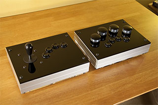

In pursuit of the highest quality controls for use in my visualization work, I've designed and build a pair of boxes using Ultimarc arcade controls, 8020 extruded aluminum, and 6mm laser-cut acrylic. 8020 extruded aluminum framing is absolute overkill for this application, lending a comforting mass to both boxes. The top acrylic panels are doubly-thick, giving a solid 12mm surface and allowing the joystick plate to be trapped. The bottom panels are transparent acrylic, giving a view of the internals.
The first box is a normal joystick and button panel using an Ultimarc U360 in its unrestricted analog mode with four Goldleaf arcade buttons attached. The intent for this box is to replicate the control interface to the Moonwall, and facilitate the further development of that project.
The second is an attempt to revive the application of dialboxes in 3D graphics. This box contains four Ultimarc SpinTraks plus four Goldleaf buttons. The SpinTraks include large knobs and heavy flywheels, and they spin forever. This is a very heavy box.
kooima@csc.lsu.edu